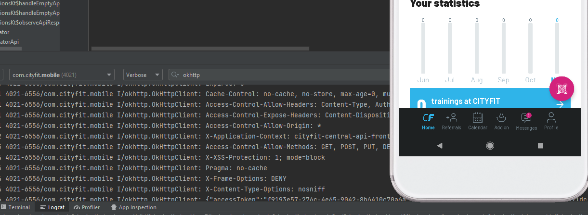

Local gym forced me to RE their app (pre-proof-reading)
or: How to roll-out your own version of an API client in a few simple steps
TLDR; I hacked(wink) my gym's app, so my friend can go with me using his old phone.
After some convincing I managed to get my friends to sign-up to a local gym with me. One of them unfortunetely was unable to use their entrance app on His phone(He has android 5.0, app requires 6.0+). Customer service told us that this app is the ONLY way they provide to access the facility. I did not see any technical reason for this stupid app, that simply generates QR code via their API, to require him to purchase newer phone. So I decided to write my own so that He can finally train with me.
DISCLAIMER: this post will be mostly about surface-level overview of how to write own client for some service with non-documented API. If you are already experienced with it you wont get much out of this read. The interesting part in this is that my client actually has to be tested physically at their location.
1. How API clients "work"
Before we start with anything concrete let's quickly go over how an API is typically consumed. A simplified model looks like this:
- (Most) APIs provide login endpoint where clients send request(What are requests?) with authentication(typically username/email and password) data and receive some form (What are tokens?) of an authentication token in a response.
- Clients save this token and from this point on use it to request data from API's other endpoints.
- API understands only the requests it receives, It doesn't care about the actual place they come from. So, if you just happen to have the correct authentication token and send requests in the same way as the client (exactly same way, more on this later), you are pretty much indistingushible from the "official" client.
So with that in mind, we just have to figure out what requests the official client makes to the server, and mirror them. For a public API it's very straightforward as they are well-documented with lots of resources on how to use them. But for a private API things get a little bit harder, since we have to read how the API and it's requests work by examining the "official" client. And since most of the time when we are dealing with a proprietary software we don't have the access to it's source code. And so we have to reverse engineer it ourself.
2. Reverse engineering for beginners
With that out of the way, let's start getting into something more concrete. My problem at the start was as follows:
I have an app on my phone. I can't access it's source code but I have to know what it's doing EXACTLY.
Every time a problem like this essentialy boiles down to looking at the binary's assembly (since reversing binary to assembly is easy, but assembly to actual code not). In some cases we are able to get a more "reading-friendly" format of the decompiled assembly. Sometimes it can work pretty nice, but most of the time context is lost and there's not much to gain from reading the code instead of the instructions. Fortunately for me, Android apps are written in Java, so we can use Smali dissasembly, which then translates pretty nice into actual Java code using some free tools (Most helpful was bytecode viewer for the Java code and Android Studio's built-in APK analizer for IDE functionality). So before going forward we do have to know how to at least read some assembly language.
So, we have only the APK (CityFit) downloaded from the store using one of the many free online tools. Our plan is as follows:
- Put our APK into bytecodeviewer and Android Studio
- Read the code and study the API requests made from it
- (Optional) document and mock the API so that can test it without any code and not forget about some important call later on (I used Postman for that)
- Recreate requests in our own code.
- ???????
- Profit!!! (In this case, have a friend at the gym)
Seems simple enough.
3. Reading code that is not available for reading
APK loaded in the software
Those screens at the beginning look very intimidating. I had zero experience with any Android development. But I just did the first thing that popped in my head - looked around some random files. The one thing I knew is that their code is inside
/java/com/cityfit/folder and the rest are just 3rd party libraries.
After some time I finaly got something interesting:
Now I know the API url. First step forward has been made. No more could I turn back. I felt blood.
Motivated I digged around for a few hours (like 3 or 4. this whole part of deciphering code was done between 11PM and 4AM) and had a list of interesting files:
/java/com/cityfit/mobile/utils/QRUtilsKT <--- Generating QR code from tokens received from API /java/com/cityfit/mobile/utils/DeviceIdUtilsKT <------ Generating unique device ID, biggest PIA, cost me 2 testing accounts and around 20$. /java/com/cityfit/mobile/presentation/common/utils/DateUtilsKt <------ Timestamp used for the QR generation, received from time server using TrueTime library /java/com/cityfit/mobile/data/api/ClubEntranceApi <------ Shows which endpoint is used to get the data for the QR generation as well as device registration which, again, is PIA /java/com/cityfit/mobile/data/api/Api <----- Shows all of the endpoints, but most importantly, the login at "/tokens"
With this list in mind I proceded to the next stage. I created a few fake accounts and using logcat and device emulator inspected what data is being sent and received. Fortunately for me they logged all the data received so I didn't have to learn how to use Wireshark.
I cross-referenced it with functions in selected files and was able to create an overview of how the API works:
- Client sends a request to "/tokens" with authentication data and receives a Bearer token, which is then used for all the communication with the API
- If, the client does not have a device active (which is checked either at /me/barcode OR as an error with QR generation, can't remember right now, was not that important for me. Registration itself happens at /me/device) it registeres the device using device ID from the DeviceIdUtilsKT file. It's just the UUID-fied secure.android_id (which, as I later learn, is unique for APK SIGNING :D).
- QR is generated using 3 values received from /me/access/permit?mobileDeviceId={registeredDeviceID}. The values are: access_token, access_level(? I guess who we are - gym member, stuff, owner, tech etc.) and an integer. Integer is used to hide any time desynchronization between server and client, since timestamp gets divided by it. I only seen it returned as 15.
- QR code generation is /java/com/cityfit/mobile/utils/QRUtilsKT. I was unable to read it from the Smali code itself, so I opened it in bytecodeviewer: I had to fiddle around and see which decompiler gave the best result, but at the end I was able to decipher that It simply concates the access level with the divided timestamp HmacSHA1-ed using the token. I quickly recreated it in some mockup code and tested if I produce the same values as the client. And I did.
- I mocked the API requests in Postman. I couldn't test the QR generation nor validity, but at least I was sure that authentication and registration work as intended. (And that accounts can't be registered on devices using different device Id. The endpoint can't even be re-called using the same ID, otherwise they block the account and you have to contact customer service...I learned that the hard way.)
-
Next step was to create my own app (I
DO NOT TAKE ANY RESPONSIBILTY WHAT HAPPENS WITH YOUR ACCOUNT IF YOU USE IT. PROCEEDED ON YOUR OWN RISK.). I
won't get into much detail since I
can't write Android at all. The app
is propably the worst thing I have created and I will surely rewrite my client as a web-app someday. It was
rather straightforward. I set it up so that I can either login, or login and register, setup the device ID
manually so that it matches my main client (which now that I think about it, broke their security measure so
that multiple people won't use the same account and share the plan) and generates the QR code using
intervals similiar to those in the official client, although I think they regenerate the QR a little more
often for some reason.
My horrible app
4. The physical test
And now the most exciting part. I had to go and test it myself at their location. I was pretty nervous but hopeful. I packed my usual gym bag and headed out.
I got into the building and pulled out my app, with a brand new, single-day plan account. I walked up to the scanner thingy, placed my phone and...almost cried. Even if my app is correct and generates good QRs it wont work. Why?
Because of the f*cking scanner itself. It's too short. How could I have not thought about it. I mean looking at the oficial client we can clearly see that the QR is placed at the top of the screen so that it gets read by the shallow scannera.
So I'm standing there, ready to go back home (since I couldn't enter with normal client, because I got my main acc disabled by accident XD). But then, in the time of the greatest dispair I got hit with the greatest idea I had in this entire project. I used my phone's app *cleaning* animation to make the QR code smaller!!! And IT F*CKING WORKED.
I was so excited I recorded myself leaving if you want some video proof (YT link if you prefer that). The beeeping at the end if not because of my app, I just left my bag a little too close to the capsule's doors I think.
5. The point
This tiny project sure was a lot of fun and I even learned a little bit about Android apps. But I was pretty much forced to do it. If I didn't create my own client, my friend wouldn't be able to go to the gym with me. That's fucked up in my opinion. I understand that we can't support old hardware/software forever. But digita exclusion, especialy one without a merit (and since I was able to get inside the gym I prove that the app did not in fact need the higher API requirement), leads to situations like this.I was forced to dive into an uknown app and essentialy reverse-engineer how it works. That led to me creating my own app which I think can be used to share a gym membership. Either because of laziness or some weird higher-up decision developers created well-known situation - they FORCED someone to break their system.And I do not want to have to do that. I want my friend to be able to visit the f*cking gym with his 5.0 Android phone.
If this somehow gets to someone connected with the gym or the app, they will propably try to mitigate it, unfortunetely for me and my friend. Fortunately for me, there isn't much that they can do, except for swapping the generation algorithm from time to time, so that I have to go inside the source code everytime they push an update. This leads to me to another problem. I wrote this damn app. I could just tell them about it and we could work out perhaps an official lightweight version of the app or a website (since I could actually help with coding it). But I can't trust them and I know they wont give a damn about this situation, they'll just try to block me. If they gave a damn, they would not have excluded ~8% of Android users from accessing their gym without a reason.
I am not a fan of this situation.
Oh, and they will propably cancel my membership and block me, if they ever find out. Heh.